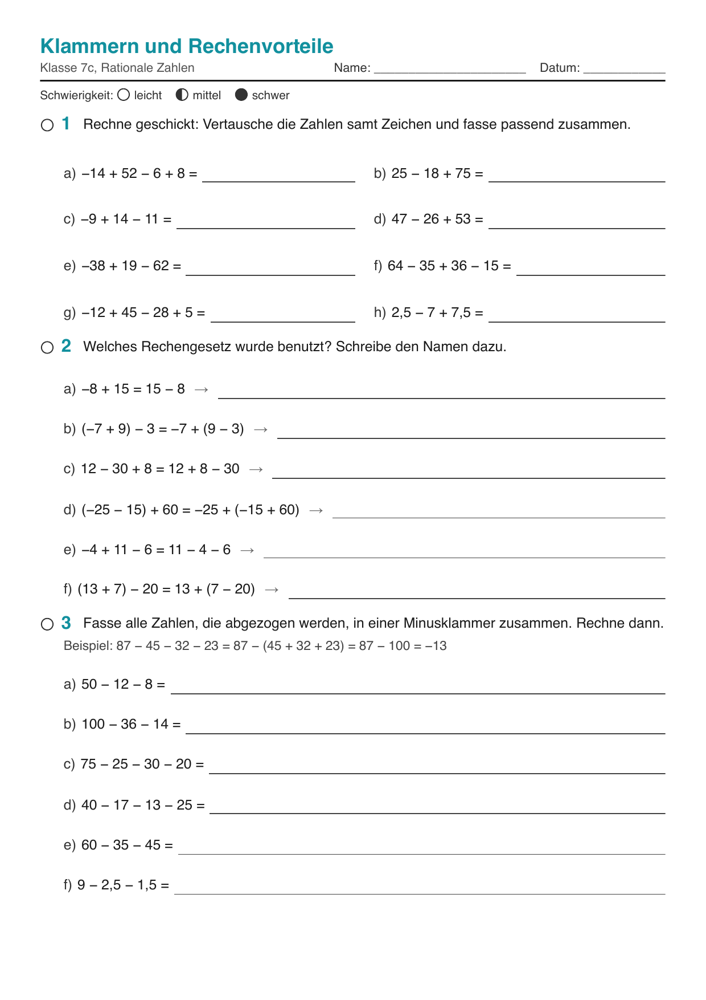
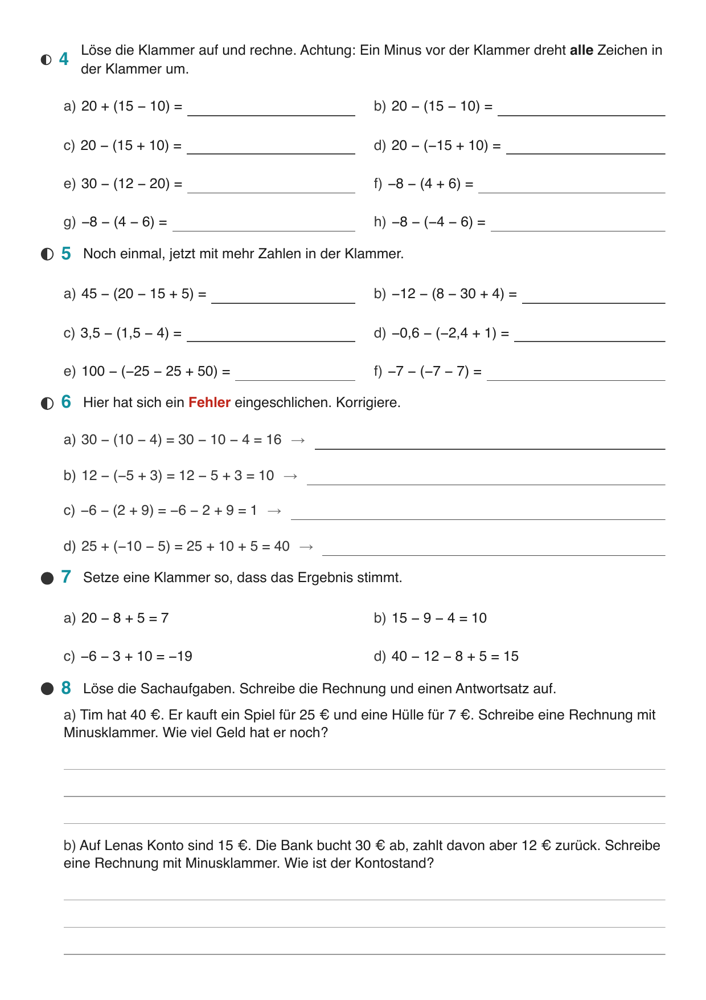
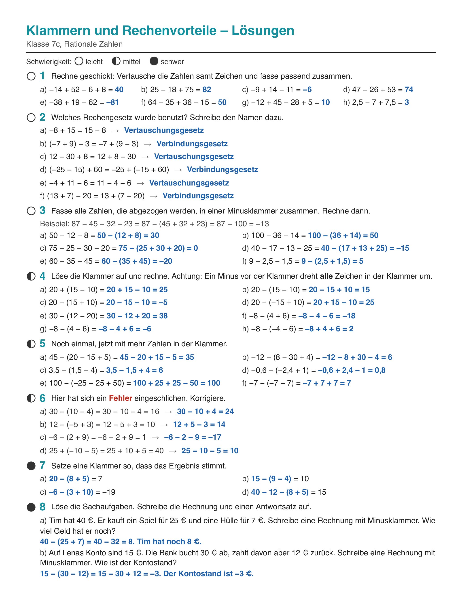
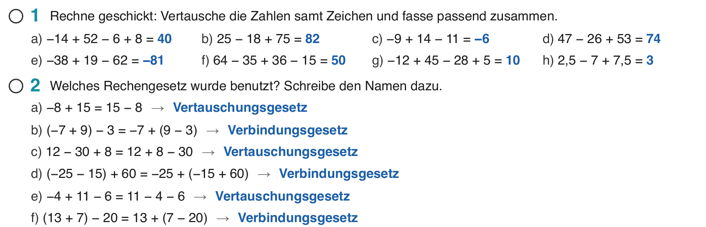
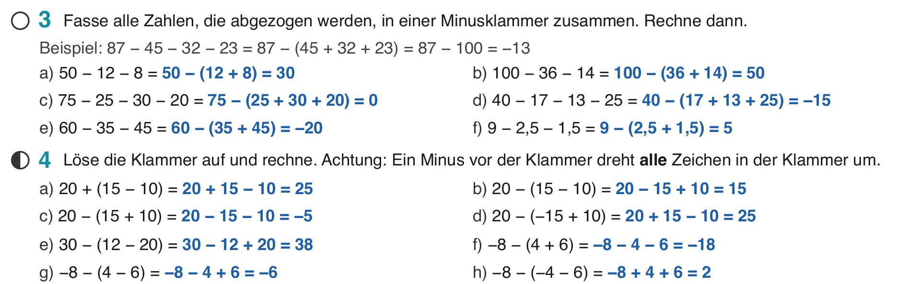
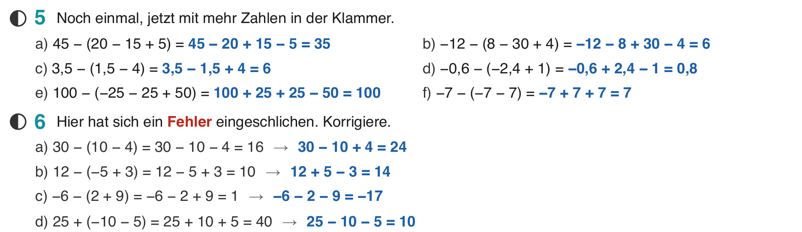

Klasse 7c, Mathematik, Mi 30.09.2026, Einzelstunde
| Arbeitsblatt „Klammern und Rechenvorteile“ in Klassenstärke (Rationale Zahlen 3 – Arbeitsblatt Klammern.pdf, eine Seite). | |
| Digital | Folien-PDF dieser Stunde in Notability (Merkheft-Bild, Arbeitsblatt als ganze Seite, Lösungsseite). Datei: Mathe 7c – Woche 3 – 3 Minusklammer üben.pdf |



Die Minusklammer von Dienstag wird geübt.


